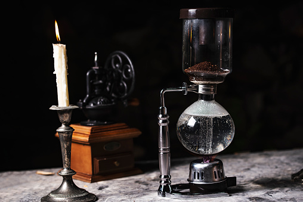

About
Welcome to my site! My name is Kevin, and I am a fullstack developer and IT consultant with a passion for creating software bugs for a living. I have been in the industry for 5 years and have a wealth of experience and knowledge to share.
My primary focus is on fullstack development, which involves working on both the frontend and backend of a website or application. I have a strong understanding of various programming languages such as JavaScript and Python, as well as frameworks such as Vue and Vuetify. I am also well-versed in databases and server-side technologies, making me a valuable asset to any development team.
In addition to my fullstack development skills, I also offer IT consultation services. I have a deep understanding of various IT systems and can provide advice and guidance on the best solutions for your business. Whether you need help with your website, software, or hardware, I am here to help.
Creating software bugs for a living might sound strange, but it is an important part of my job. As a developer, it's my responsibility to find and fix bugs in the software I create. I spend a lot of time testing and debugging my code to ensure it is working as intended. I find this to be a challenging and rewarding aspect of my job as it allows me to continuously improve my skills and knowledge.
When I'm not working, you can find me sipping on a cup of coffee. I am a self-proclaimed coffee connoisseur and enjoy trying different blends and brewing methods. Coffee is my go-to drink to help me focus and stay energized throughout the day.
Lastly, I am an avid gamer and enjoy playing a wide variety of games. From first-person shooters to strategy games, I love the challenge and excitement of playing. Gaming is a great way for me to relax and unwind after a long day of work.
Thank you for visiting my site. I look forward to connecting with you and working together to bring your ideas to life.